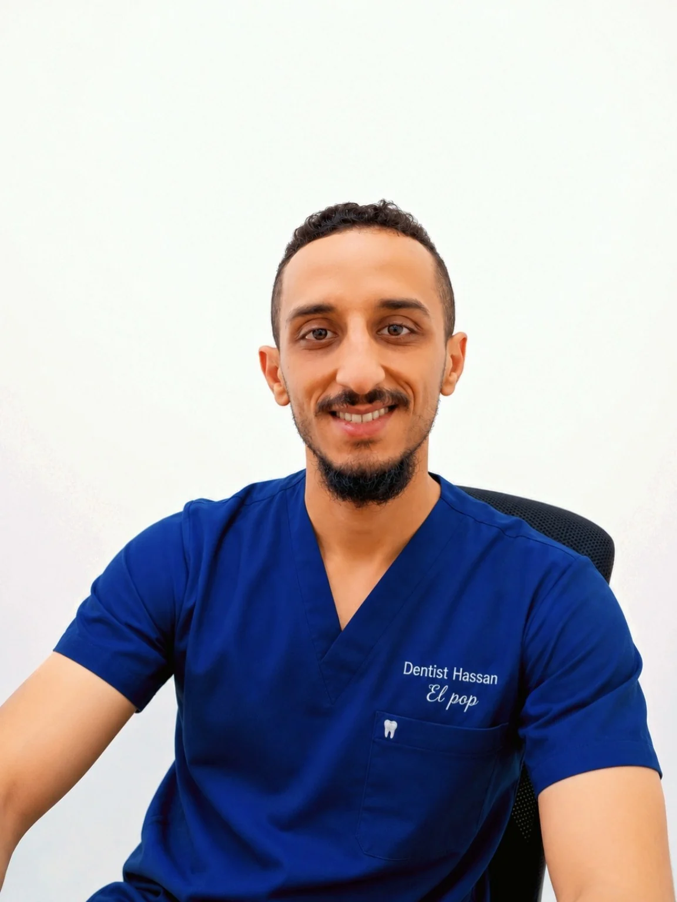

✳
Clinical Dentistry
Patient assessment, treatment planning, restorative care, endodontics, prevention, documentation and safe clinical practice.
I began with healthcare. I grew through leadership, operations and human connection. I bring that range of perspective to every new challenge.

Adaptability isn't changing who you are. It's bringing everything you've learned into what comes next.
MY PROFESSIONAL PHILOSOPHYI'm Hassan Mahmoud Ibrahim Abou Hussien, an Egyptian licensed dentist and healthcare professional whose experience extends beyond clinical practice into pharmacy management, patient services, operational coordination, and team leadership.
My career has been shaped by roles that demand precision, empathy, organization, accountability and clear communication. Today, I lead a dental section in public healthcare while continuing clinical practice and professional development in healthcare data, quality and AI.
I'm open to meaningful opportunities in customer support, healthcare operations, administration, quality-focused work and multidisciplinary teams — as well as dentistry and community health.
Each discipline shaped a different strength. Together, they make a versatile working style.
Patient assessment, treatment planning, restorative care, endodontics, prevention, documentation and safe clinical practice.
Team coordination, staff rotas, service coverage, quality-minded workflows, infection control and public healthcare delivery.
Handling real patient and customer concerns, medication-related insurance issues, communication and practical problem-solving.
Daily operations, stock control, staff coordination, retail healthcare workflows and insurance-related administrative support.
Continuing education in health analytics, responsible AI, critical thinking, leadership and process improvement.
From pharmacy counters to clinical care and leading a public healthcare team.
Lead dental-section coordination for approximately 15 dentists, including monthly rota planning, attendance monitoring, day-to-day service delivery and patient safety alongside clinical practice.
Patient assessment, treatment planning and restorative, endodontic and preventive care in a multidisciplinary clinical setting.
Community-oriented dental services, prevention and patient education with attention to access and safe care.
Primary dental care, treatment planning, records, infection prevention and collaborative public healthcare services.
General dental assessment, patient communication and routine clinical care in private settings.
Managed pharmacy operations, staff coordination, inventory, customer inquiries and administrative workflows.
Supervised day-to-day service, patient support, inventory operations and insurance-related dispensing workflows.
Supported customer service, stock organization, administrative activity and pharmacy team operations.
Managing schedules and supporting effective coverage across a busy public-health dental team.
Helping patients understand treatment, addressing concerns and navigating complex service interactions.
Participating in rural and community healthcare initiatives, with an emphasis on prevention and education.
Applying an interest in quality, data and structured decision-making to healthcare operations.
Actual documented clinical cases from my portfolio. Browse by discipline and open each case for a larger view.
Real certificates from clinical education, professional development, data, AI and leadership learning.
Al-Azhar University, Faculty of Dental Medicine · Cairo, Egypt
2022Egyptian Ministry of Health and Population · Egyptian Dental Syndicate member
EGYPTProfessional courses in clinical dentistry, quality, healthcare analytics, responsible AI and teamwork.
CONTINUOUSOpen to international and remote roles across healthcare, operations, service, coordination, and quality-focused work.